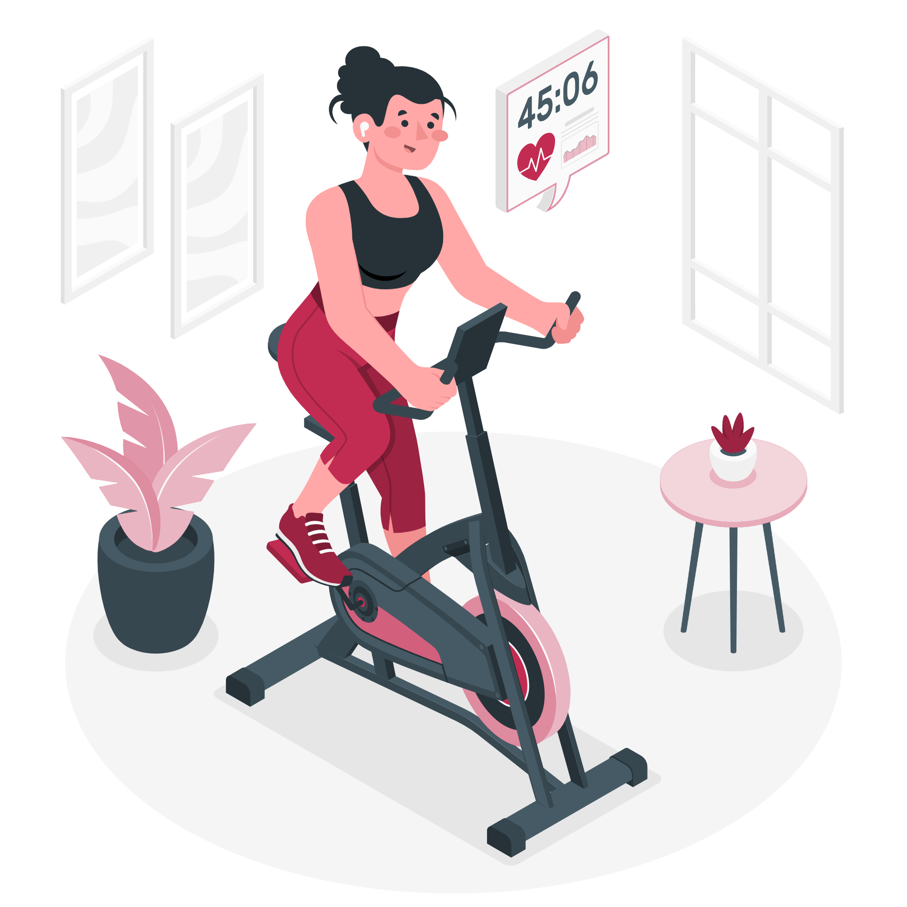

Fonte: storyset.com
Exercícios físicos regulares ajudam a baixar as taxas de glicemia.
Quando você gasta energia, o organismo usa o açúcar do sangue em velocidade maior.
O monitoramento do nível de glicose no sangue é importante também na prática de esportes, que deve ser feita
sob orientação da equipe multidisciplinar.
Se você não estiver se exercitando e for começar, consulte um médico antes. Ele pode indicar a atividade
mais apropriada – o objetivo é fazer alguma coisa que você goste.
A atividade física não precisa ser na academia. Caminhadas e percursos de bicicleta podem ser ótimas
opções.
Fontes
1. Sociedade Brasileira de Diabetes. Exercício físico e diabetes mellitus.
Diretrizes da Sociedade Brasileira de Diabetes 2019-2020. São Paulo: Clannad; 2019. p. 146-152.